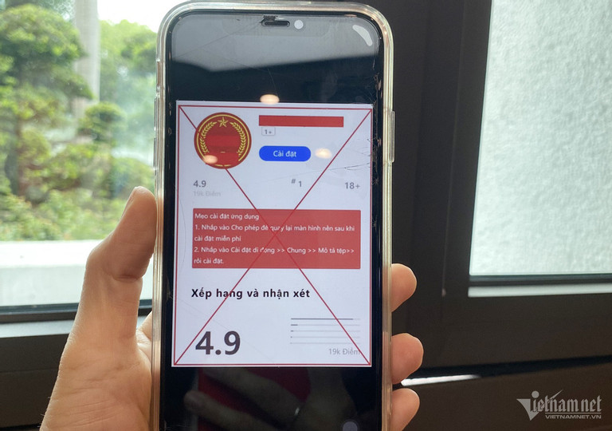

Tội phạm mạng sẽ tấn công mạnh vào smartphone, thiết bị IoT
Trong cảnh báo an toàn thông tin mạng tuần từ ngày 27/11 đến 3/12, Trung tâm Giám sát an toàn không gian mạng quốc gia – NCSC thuộc Cục An toàn thông tin (Bộ TT&TT) đã cảnh báo về mã độc có tên ‘FjordPhantom’ trên nền tảng Android xuất hiện từ đầu tháng 9/2023 trong các chiến dịch tấn công mạng nhắm vào người dùng tại Đông Nam Á như Indonesia, Thái Lan và Việt Nam.
Mã độc ‘FjordPhantom’ được phát tán thông qua các ứng dụng, dịch vụ nhắn tin với hình thức tấn công kết hợp giữa mã độc ứng dụng và kỹ thuật ‘Social engineering’ để lừa đảo người dùng. Cụ thể, người dùng sẽ được đối tượng tiếp cận qua email, SMS và ứng dụng nhắn tin rồi bị lừa tải xuống ứng dụng ngân hàng giả mạo. Sau đó, đối tượng sẽ sử dụng kỹ thuật ‘Social engineering’ tương tự như một cuộc tấn công định hướng qua điện thoại - đây là kỹ thuật khiến người dùng gọi tới các tổng đài giả mạo để được hướng dẫn cách thực thi ứng dụng ngân hàng đã tải xuống.
Cũng trong tuần từ ngày 27/11 đến 3/12, thông tin về việc các nhóm đối tượng lừa người dân tải và cài đặt ứng dụng chứa mã độc giả mạo app VNeID để đánh cắp thông tin, tài sản là một trong những nội dung cảnh báo nổi bật trong “Điểm tin tuần” được Cục An toàn thông tin thực hiện.

Trước đó, hồi tháng 7/2023, đại diện Cục An toàn thông tin (Bộ TT&TT) đã thông tin về chiến dịch lừa người dân cài các app giả mạo ứng dụng Chính phủ, Tổng cục Thuế. Các app giả mạo này chứa mã độc giúp các đối tượng có thể điều khiển từ xa, thực hiện lệnh chuyển tiền trên chính điện thoại của nạn nhân.
Những thông tin cảnh bảo kể trên phần nào cho thấy người dùng vẫn là khâu yếu trong chuỗi an toàn thông tin. Thống kê của các chuyên gia NCS đã chỉ ra rằng, trong top 3 điểm yếu của các hệ thống tại Việt Nam bị khai thác nhiều năm 2023, điểm yếu con người chiếm tỷ lệ cao nhất, gần 33% số vụ tấn công.
Đưa ra dự báo an toàn, an ninh mạng năm 2024, các chuyên gia NCS cho rằng, các hình thức tấn công mạng, tấn công có chủ đích APT vào các hệ thống trọng yếu, tấn công mã hoá dữ liệu sẽ tiếp tục tiếp diễn.
Đặc biệt, các chuyên gia nhận định, chuyển đổi số diễn ra mạnh mẽ khiến điện thoại thông minh (smartphone) trở nên vô cùng quan trọng trong đời sống cũng như công việc của nhiều người; tuy nhiên cũng vì thế smartphone cũng trở thành ‘miếng mồi’ hấp dẫn của các nhóm tội phạm mạng.
“Trong năm 2024, người dùng di động sẽ phải đối mặt nhiều hơn với các loại mã độc mới có khả năng xâm nhập, khai thác lỗ hổng, chiếm quyền điều khiển điện thoại, bao gồm cả các điện thoại chạy hệ điều hành Android và hệ điều hành iOS”, chuyên gia NCS dự báo.
Cũng trong năm tới, sẽ có những đợt tấn công quy mô lớn nhắm vào các thiết bị IoT tại Việt Nam, đặc biệt các thiết bị có khả năng thu thập thông tin, hình ảnh như camera an ninh, màn hình quảng cáo công cộng.
Hacker gia tăng ứng dụng AI soạn kịch bản tấn công, lừa đảo
Một điểm đáng chú ý là các chuyên gia đều có chung nhận định rằng tội phạm mạng ngày càng biết cách lợi dụng công nghệ AI để hỗ trợ các hoạt động tấn công mạng, và xu hướng này sẽ tiếp tục nở rộ trong năm 2024.
Theo ông Lê Quang Hà, Phó Giám đốc Công ty An ninh mạng Viettel, với sự bùng nổ của AI tạo sinh và ứng dụng phổ biến là ChatGPT, các cuộc tấn công mạng đã có sự thay đổi rõ ràng. Chuyên gia này phân tích, nếu như trước đây, các email lừa đảo gửi đến người dùng nếu không phải diện tấn công có chủ đích thì nội dung trong mail khá ngô nghê; hiện nay, với việc sử dụng AI, lượng email lừa đảo tự động gửi đến người dùng được “may đo”, thiết kế với lời lẽ hợp lý, khiến cho người dùng dễ bị dẫn dụ mắc vào bẫy lừa đảo hơn.
Đồng quan điểm, chuyên gia Vũ Ngọc Sơn, Giám đốc Kỹ thuật Công ty NCS nhấn mạnh, công nghệ trí tuệ nhân tạo đã có những bước phát triển thần kỳ trong năm 2023 và sẽ tiếp tục bùng nổ ứng dụng trong năm 2024. Điều này sẽ kéo theo những công cụ phục vụ mục đích xấu như lừa đảo, tấn công mạng.
“AI tạo sinh như ChatGPT và Deepfake sẽ được sử dụng để tự soạn các kịch bản lừa đảo nhằm chiếm đoạt tiền của nạn nhân. Mã độc và các công cụ khai thác lỗ hổng sẽ được trang bị thêm trí tuệ nhân tạo để tăng khả năng khai thác lỗ hổng cũng như giúp qua mặt các giải pháp an ninh mạng”, ông Vũ Ngọc Sơn phân tích.
Ông Nguyễn Gia Đức, Giám đốc quốc gia Fortinet Việt Nam cũng cho hay, báo cáo dự báo về các mối đe dọa an ninh mạng năm 2024 của nhóm nghiên cứu FortiGuard đã nhấn mạnh nguy cơ leo thang của các mối đe dọa mạng nâng cao do sự phổ cập của dịch vụ tội phạm mạng và tác động của AI tạo sinh.
“Với việc các tác nhân đe dọa hiện được trang bị các công cụ tiên tiến, sử dụng các kỹ thuật tinh vi hơn và biết cách đa dạng hóa các mục tiêu, cộng đồng chuyên gia an ninh mạng cần phải thống nhất về cách thức phản ứng”, ông Nguyễn Gia Đức nêu khuyến nghị.